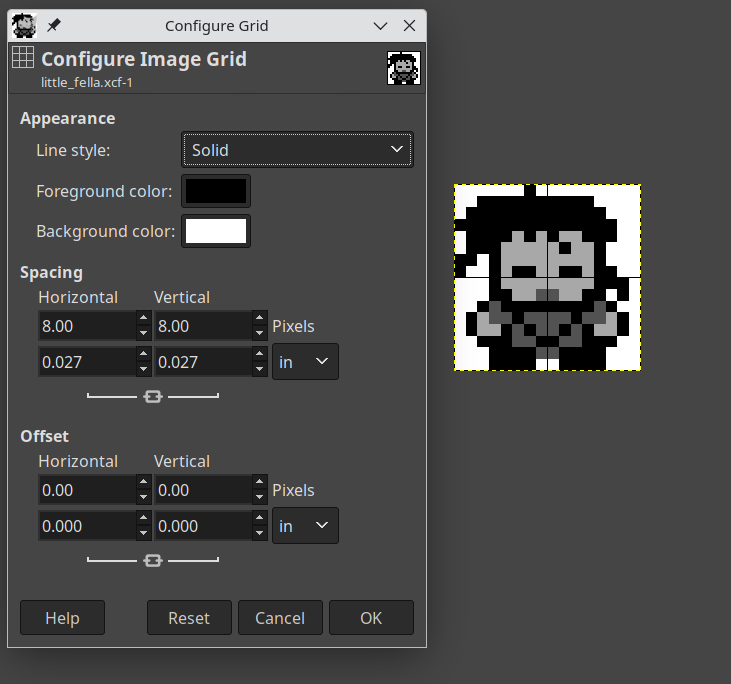
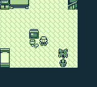
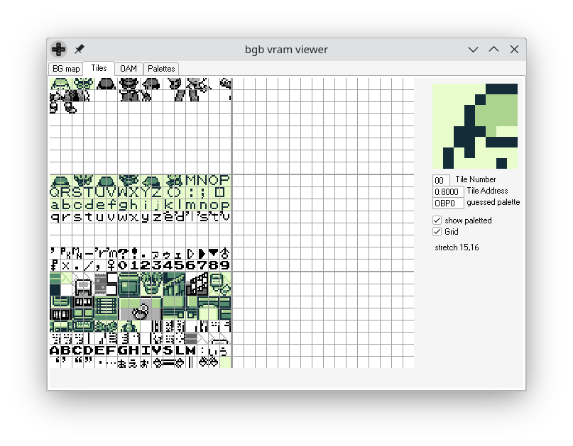
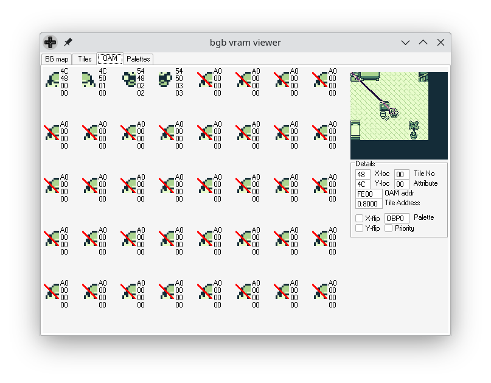
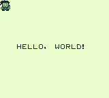

Drawing a Sprite on the Gameboy
Table of Contents
Getting Started
This post is a continuation of this previous post. The code from that post will be modified and built upon here. It shouldn't be necessary to read beforehand, but it may help if you want further explanation of the code here.
Picking up from last time, we have a ROM that displays a mostly blank screen with a "Hello World" message written on it. All of this is displayed on the background, using a tileset and a tilemap. This time, we're going to draw a character sprite on the screen. Specifically, we're going to be drawing this little guy, whom I've dubbed "Little Fella".
Our character will be drawn as an object and will be placed on top of the background (there is a flag that will make the object appear behind background tiles as well). It will also be able to be placed at any pixel location, including offscreen, rather than being fixed to the tile grid that the background uses.
If you'd like to get the code for this post, you can clone it from this GitHub repo.
Creating our Sprite Graphic
Before we can talk about the Gameboy side of things, first thing we need to do is create the image we'll be using as a sprite. You can use the little fella just above (it's already in the Github repo for this post), or you can create your own. The image I'm using is 16x16 pixels, and you want to use only 4 colors in grayscale (white, light grey, dark grey, black). RGBGFX will be able to generate the 2bpp file for you to include in your assembly. Using an 8x8 grid can help you see exactly what tiles will be generated. Once you have it drawn, save it as a png in the assets file of the project directory.

What is an Object
The Gameboy stores information about objects in a section of memory on the PPU called OAM (Object Attribute Memory). There are 160 bytes split into 4-byte chunks, or 40 objects. The layout of each object looks like this:
| Byte Offset | Purpose |
|---|---|
| 0 | Y position |
| 1 | X position |
| 2 | Tile index |
| 3 | Flags |
It's not too different than a background tile, except that we can position it anywhere we like and there are some flags such as mirroring the tile.
Looking at an Example of a Sprite
You might have noticed that an object specifies a tile, which are all 8x8 pixels. But the character above is 16x16 pixels. Our sprite is comprised of 4 objects, each a single tile. This is a common size to use for sprites, and the size I've chosen is the same size as the character sprite in games such as Pokemon and SaGa (Final Fantasy Legend). It's a good balance between being small enough to not cramp the screen and large enough to have some detail.
Objects can also be 8x16, if the proper LCD control flag is set (set the
LCDCF_OBJ16flag onrLCDC). Because this is set on the LCD control, it's global, so you can't apply it selectively.

The images here show a screen from Pokemon Red. Here you can see the screen as it's presented on the Gameboy. If you look at the VRAM viewer screenshots, you can see the currently loaded tiles as well as the OAM contents. It shows the tiles as well as the 4 objects that compose the player character.
In the tile viewer, the player is using the top-leftmost 4 tiles, and you can see where they are being used in the OAM viewer below that. The first 4 objects make up the player character, and there are no other active objects. All other objects have a Y coordinate of $A0 (160) which is well off-screen. BGB puts a red cross mark over any objects that are currently hidden, so you can see what is actually being displayed.


Getting our Sprite Onto the Screen
There a 4 basic things we need to do to get our sprite to be displayed:
- Enable objects on the LCD Control register (set the
LCDCF_OBJONflag onrLCDC) - Set the object palette with colors (there are 2 palettes, we'll just use the first one,
rOBP0) - Load tile data into the first tile block in VRAM ($8000)
- Write object data to OAM
The first 2 are trivial, the first is adding the flag when we're setting flags on the LCD control register.
ld a, LCDCF_ON | LCDCF_BGON | LCDCF_OBJON ld [rLCDC], a
This will cause objects to be drawn to the screen, and is safe to toggle any time you want to, including in the middle of a frame being drawn. This is how sprites are "covered up" by dialog boxes in games like Pokemon. For our purposes, we're just going to set it and forget it.
ld a, $E4 ld [rBGP], a ld [rOBP0], a
The code above will set both the background and first object palette to $E4, which is a nice black, dark gray, light gray, white palette.
Understanding VRAM layout
Loading the tile data is something we're already familiar with, we load object tiles the same way we load background tiles. This time, we'll want to make sure we understand the different sections of VRAM.
There are 8KB of VRAM, broken up into 5 sections, 3 sections 2KB each for tile data, and 2 sections 1KB each for tilemaps. See the diagram below for a quick explanation of where tiles are being read from for the background/objects.
+------------------------------------+ | Block 0 ($8000-$87ff) | | Objects: indices 0-127 | | BG (LCDCF_BG8000): indices 0-127 | | BG (LCDCF_BG8800): not used | +------------------------------------+ | Block 1 ($8800-$8fff) | | Objects: indices 128-255 | | BG (LCDCF_BG8000): indices 128-255 | | BG (LCDCF_BG8800): indices 128-255 | +------------------------------------+ | Block 2 ($9000-$97ff) | | Objects: not used | | BG (LCDCF_BG8000): not used | | BG (LCDCF_BG8800): indices 0-127 | +------------------------------------+ | Tilemap 0 ($9800-$9bff) | | BG (LCDCF_BG9800) | | Window (LCDCF_WIN9800) | +------------------------------------+ | Tilemap 1 ($9c00-$9fff) | | BG (LCDCF_BG9C00) | | Window (LCDCF_WIN9C00) | +------------------------------------+
You can find a more detailed explanation of this information over at the PanDocs.
Before, we loaded our background tiles into block 2 ($9000), and they all fit within the 2KB section. This time, we're going
to load our tiles into block 0, leaving the background completely unchanged. I've included a vram.inc file with some DEFs
for us to use to reference these addresses.
DEF vram_tile_block0 EQU $8000 DEF vram_tile_block1 EQU $8800 DEF vram_tile_block2 EQU $9000 DEF vram_tilemap_set0 EQU $9800 DEF vram_tilemap_set1 EQU $9C00 DEF oam_size EQU $A0
The actual method for loading the tile data remains the same, we just need to include the new data and tell it to load it into the appropriate location.
...
ld de, example_sprite_data
ld hl, vram_tile_block0
ld bc, example_sprite_data_end - example_sprite_data
call mem_copy
ret
...
example_sprite_data:
INCBIN "assets/little_fella.2bpp"
example_sprite_data_end:
This gets our tile data loaded and ready to be referenced by our objects. Speaking of objects…
Object Attribute Memory (OAM)
Object Attribute Memory, or OAM, is a small 160 byte section of memory located on the PPU. This is where we want to write the data for our sprites. Since we are using 8x8 objects and our sprite is 16x16, we are going to use 4 objects to draw our character.
We can access OAM directly at address $fe00 (defined as _OAMRAM in hardware.inc). Like VRAM, this is sometimes
inaccessible to the CPU depending on what the PPU is currently doing. OAM is available during HBlank (the time between
scanlines), and VBlank (the time between frames). All that said, it's not generally a good idea to try and directly
access this memory. Instead, we're going to leverage the Gameboy's hardware to do the job for us.
First thing we're going to do is to create a sort of "shadow" OAM in regular RAM. This is where we will write the object data to directly. The next thing we need to do is get that shadow OAM copied over to the real OAM. The Gameboy has a DMA controller built in to do exactly that job. All we need to do is give it the high byte of the address of our shadow, and it will copy the contents of it to OAM.
First, let's look at the code:
rsreset DEF OAM_CHARACTER_Y_POS rb DEF OAM_CHARACTER_X_POS rb DEF OAM_CHARACTER_TILE rb DEF OAM_CHARACTER_ATTRIB rb DEF OAM_CHARACTER_SIZE EQU _RS DEF NUM_OAM_CHARACTERS EQU 40 DEF OAM_FLAG_HORIZ_FLIP EQU $20
First in the oam.inc file where I defined some constants. Check out
this link to see documentation for the RS commands, but
for a quick explanation, they allow you to define offset constants easily. There is a symbol named _RS that keeps the
current offset value, so you want to start with rsreset to set it to 0. Then when you DEF something and use rb as the
value, it will set your symbol to the current value of _RS and then increment _RS by the amount specified. Here I use
rb without any numbers to specify 1 byte. You can also use something like rb 2 for 2 bytes. rw and rl are available
to specify word (16 bit) and long (32 bit) values.
The horizontal flip flag isn't going to be used in this example, but it will in the future, so I went ahead and left it in here.
INCLUDE "hardware.inc" INCLUDE "oam.inc" ;; This needs to be aligned to an address of $XX00. This is due to the DMA call ;; taking the high byte of shadow_oam and then copying from $XX00 - $XX9F ;; ALIGN[8,0] means the 8 least significant bits need to be 0. SECTION "Shadow_OAM", WRAM0, ALIGN[8,0] shadow_oam:: ;; This is a loop that the assembler will perform, generating labels named ;; oam_character00 through oam_character39. The '{02d:n} is similar to printf ;; format, where it specifies at least 2 decimal digits, and the variable is n. FOR n, NUM_OAM_CHARACTERS oam_character{02d:n}:: ds OAM_CHARACTER_SIZE ENDR shadow_oam_end:: SECTION "dma_loader", ROM0 ;; Note that the dma_code label is located in the ROM, along with the code below. ;; the dma_init label points to a location in HRAM, where we ultimately want this ;; code to reside. dma_code_copy:: ld de, dma_code ld hl, dma_init ld bc, dma_init.End - dma_init call mem_copy ret ;; All of the code below is still within the dma_loader section within the ROM. ;; Nothing is (or physically could be) written to HRAM until runtime. The dma_init ;; label is only pointing to the address in HRAM, it's up to us to copy it there. dma_code: LOAD "dma_code", HRAM ;; This code needs to be timed so that the DMA transfer will complete by the time this ;; function returns. The timing (and the code below) is documented in the PanDocs. dma_init:: ld a, HIGH(shadow_oam) ldh [rDMA], a ld a, 40 .Wait: dec a jr nz, .Wait ret z .End: ENDL
I went ahead and created labels for each OAM object so we can easily reference them. The code after that warrants a bit more
explanation. You may want to refernce this PanDoc page for the
details about LOAD blocks. But the idea is that we need to get the dma_init code loaded into HRAM so we can call it
later.
OAM DMA Copy
I highly recommend reading the PanDocs page about OAM DMA transfer, as there is detail on that page that I'm not going to cover here. Additionally, the code initiating and then busy-waiting is copied directly from that page, as they've already done the timing for the wait time.
An important thing to be aware of is that while the DMA copy is taking place, the CPU can't use the bus to access either the
cartridge ROM or regular RAM. That leaves us using the 127-byte area of memory located on the SoC referred to as HRAM. In the
above code, we have a function, dma_code_copy that will copy the code from ROM to HRAM for us that we will call during
initialization. Later when we want to initiate a DMA copy, we will call dma_init, which is located in HRAM. We'll
busy-wait there until we can access external memory again.
To initiate the DMA copy, we write the high byte of the location of our shadow OAM to $FF46 (rDMA). It will then copy from $XX00 - $XX9F (160 bytes) into OAM. This is why the shadow OAM needs to be aligned.
Writing our sprite into OAM
All of the above is neccessary to understand what it is we're trying to accomplish, but none of it yet gets our sprite actually loaded into OAM to be drawn. We're now ready to go ahead and write code to do that. First, the code itself:
INCLUDE "hardware.inc" INCLUDE "oam.inc" SECTION "example_sprite", ROM0 ;; We want to draw the 4 tiles of the character. I do this using offsets from the first (top-left) ;; tile. Then I loop 4 times, adding an offset as appropriate to the X or Y of the tile. The X ;; offset is stored in d, and the y offset is stored in c. Something like this: ;; ;; | iter | x | y | ;; |------+---+---| ;; | 0 | 0 | 0 | ;; | 1 | 1 | 0 | ;; | 2 | 0 | 1 | ;; | 3 | 1 | 1 | draw_example_sprite:: ld b, 0 ld hl, oam_character00 .loop: ld c, 0 ld d, 0 ld a, b ;; The comparison below sets the carry flag when a < 2, and doesn't set it once a >= 2. cp a, 2 jr c, .skip_y_inc ld c, 8 .skip_y_inc: ;; The operation below will set the zero flag when a is odd and a, 1 jr z, .skip_x_inc ld d, 8 .skip_x_inc: ld a, [oam_character00 + OAM_CHARACTER_Y_POS] add a, c ld [hli], a ld a, [oam_character00 + OAM_CHARACTER_X_POS] add a, d ld [hli], a ld a, [oam_character00 + OAM_CHARACTER_TILE] add a, b ld [hli], a ld a, [oam_character00 + OAM_CHARACTER_ATTRIB] ld [hli], a inc b ld a, b cp a, 4 jr nz, .loop ret init_example_sprite:: ld a, $10 ld [oam_character00 + OAM_CHARACTER_Y_POS], a srl a ld [oam_character00 + OAM_CHARACTER_X_POS], a xor a ld [oam_character00 + OAM_CHARACTER_TILE], a ld [oam_character00 + OAM_CHARACTER_ATTRIB], a call draw_example_sprite ret
Probably not an ideal way to do it or anything, but this is how I did it. We start with the top left object, then loop 4 times
to fill in data for the rest of the objects. There is also an init_example_sprite function that will need to be called to
set up the initial position of the character. Note that the order is top-left, top-right, bottom-left, bottom-right. This is
important because for selecting the tile index to use, I added the loop index to the top-left objects tile index. This is fine
for how the tiles are ordered in this example, but if you have tiles in a different order or layout, this isn't going to work.
Initializing and Setting up the Main Loop
We're almost ready to run our code now, the only thing left to do is make a few changes to initialization and do a little
housekeeping. First thing, I took the mem_copy function from the old graphics.asm file and broke it out into its own
file with a few new functions.
INCLUDE "hardware.inc" SECTION "memory_funcs", ROM0 ;; de = source location ;; bc = number of bytes to copy ;; hl = destination location mem_copy:: ld a, [de] ld [hli], a inc de dec bc ld a, b or a, c jr nz, mem_copy ret ;; bc = number of bytes to write ;; hl = destination zero_mem:: xor a ld [hli], a dec bc ld a, b or a, c jr nz, zero_mem ret ;; no parameters clear_OAM:: ld bc, 160 ld hl, _OAMRAM call zero_mem ret
I added zero_mem and clear_OAM functions to initialize the shadow OAM and the real OAM. Only a few changes were needed
in main.asm. I already mentioned adding the LCDCF_OBJON flag and setting the OBP0 palette above, the other changes are
initializing shadow OAM and OAM, initializing our sprite, copying the DMA code to HRAM, and then updating OAM in the main
loop. Here's what it looks like now:
INCLUDE "hardware.inc" INCLUDE "oam.inc" INCLUDE "vram.inc" SECTION "data", WRAM0 frame_counter:: db SECTION "main", ROM0 entry_point:: ;; First thing we need to do is wait for Vblank so we can disable the LCD/PPU ;; this will allow us access to the VRAM without interruption. We enable the ;; interrupt flag here. ld a, IEF_VBLANK ldh [rIE], a ;; and then enable interrupts here. You don't want to do a halt immediately following ;; ei due to a bug, so we zero out a since we needed to anyway ei xor a halt ;; turn off the LCD/PPU ld [rLCDC], a ;; turn off the sound system. Recommended to do if it's not being used ld [rNR52], a ld [frame_counter], a ;; Clear the shadow OAM as well as the real OAM, otherwise we'll see a bunch of garbage ld bc, oam_size ld hl, shadow_oam call zero_mem call clear_OAM ;; load the DMA code into HRAM for use call dma_code_copy ;; this code will also load the sprite tiles call load_graphics ;; we need to initialize the sprite, setting its tiles, positioning it in the top-left corner of the screen, ;; and giving it an initial draw to the shadow_oam call init_example_sprite ;; load the palette colors for the background ;; $E4 = 11 10 01 00 -- black, dark gray, light gray, white ld a, $E4 ld [rBGP], a ;; also load the object palette, which for this can just be the exact same as the background. ld [rOBP0], a ;; We've got the graphics loaded and everything ready to go, so let's turn the LCD ;; back on and run our main loop. ;; We add the LCDCF_OBJON flag here to enable object drawing ld a, LCDCF_ON | LCDCF_BGON | LCDCF_OBJON ld [rLCDC], a main_loop: halt ;; halt the cpu and wait for an interrupt to occur ;; update the shadow OAM with the current sprite data, not that it will be changing in this ;; example, but we'll probably want to change it in most cases. call draw_example_sprite ;; commit the state of objects to OAM, this will cause it to actually appear on the screen the ;; next time the screen is drawn. call dma_init ld a, [frame_counter] inc a ld [frame_counter], a jp main_loop
Running the ROM
With all of that done, we're ready to build the ROM. The only change to the makefile is the ROM name, everything else is exactly the same as last time. Once it's built, we pop it in the emulator and…

We have a sprite displaying on our screen now. We'll keep this code and build further upon it, and we'll see if we can make Little Fella do something at all interesting.